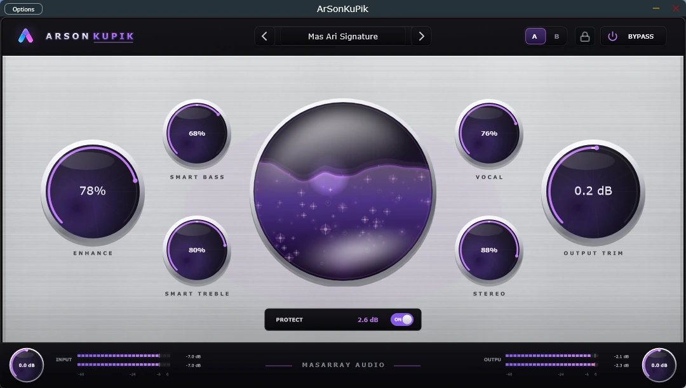

Peningkatan produk
Penyempurnaan DSP, usability, dan maintenance.
Evaluasi seluruh preset dan kontrol terlebih dahulu. Aktivasi opsional tersedia hanya ketika Anda memutuskan ArSonKuPik layak menjadi bagian tetap dari workflow. Tidak ada langganan, perpanjangan otomatis, atau tagihan otomatis.

Pembayaran merupakan imbalan atas hak aktivasi berdasarkan EULA dan Ketentuan Pembelian. Dukungan terhadap pengembangan independen merupakan manfaat sekunder dari nilai lisensi yang diterima.
Akses berkelanjutan ke pemilihan preset dan kontrol editing setelah masa evaluasi penuh.
Hak editing perpetual untuk generasi produk v0.5 yang dibeli, tunduk pada kompatibilitas dan EULA.
Satu pembelian mengizinkan satu komputer aktif pada satu waktu dengan pemulihan instalasi terverifikasi.
Aktivasi offline yang terikat hardware tanpa kebutuhan internet permanen untuk pemrosesan audio normal.
Perpetual tidak menjanjikan seluruh sistem operasi, DAW, perangkat, versi mayor, fitur, atau pembaruan kompatibilitas di masa depan.
Pendapatan dapat membantu penyempurnaan DSP, pekerjaan kompatibilitas, dokumentasi, dukungan pengguna, lisensi framework, verifikasi rilis, dan distribusi yang lebih aman.
Penyempurnaan DSP, usability, dan maintenance.
Biaya lisensi framework komersial dan kepatuhan bila berlaku.
Verifikasi rilis dan trusted code signing ketika secara finansial memungkinkan.
Testing DAW, investigasi masalah, dan panduan pengguna praktis.
Checkout resmi harus menampilkan identitas penjual, jumlah dan mata uang final, pajak, metode pembayaran, informasi refund, ketentuan privasi, serta ketentuan penyedia sebelum menerima pembayaran.